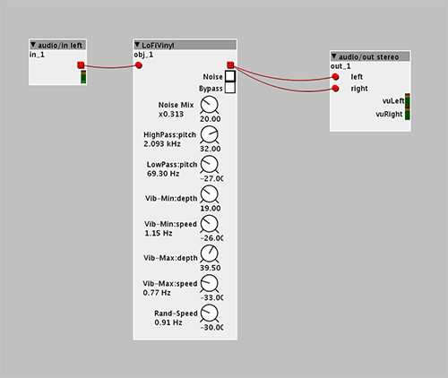

Been thinking about this one for a few days now and finally just brought my Axo to work and spent some time setting this up.
Sort of a combination of two effects pedals I really enjoy, ChaseBliss Warped Vinyl and CooperFX Generation Loss. They both can be pretty pricey so I decided to try to work it out on the Axo and am really digging the results so far (though I've only tested it with Spotify running through it, cant try it with guitar until later tonight)
For those unaware:
Chase Bliss Warped Vinyl
CooperFX Generation Loss
Both pedals aimed at simulating vinyl or cassette/vhs tape thats been warped/damaged with age. Both do a great job getting some of that warm warbly lo-fi sound that I really love
So heres what I came up with!

LoFiVinyl.axs (16.6 KB)
Really enjoying how this came out. As you can see, I start with a little sample rate reduction to give a little age and grit, some noise that you can mix in (was way too loud at first which is why I have the couple mixes in front of it so its easier to mix in subtly), a hp/lp filter section that is really nice to tweak and really get that generation loss sound, and then finally I modified one of the chorus stomp objects to just be one signal for vibrato.
It was sounding pretty nice but I wanted to add some random-ness to it all so I doubled up on the sample rate and vibrato and added the sequencer to do the switching so you can set your standard level of the effect and then also dial in the maximum you'd want it to change and while the sequencer is on those bits, it'll ramp up and then go back to usual after which worked out really well for subtle variations (or not so subtle). Can also crank the speed of the sequencer which actually produces some almost pops and crackles as it runs which is also really nice
Let me know what you guys think! I'm sure I'll tweak a bunch more and maybe change things once I can try it on my guitar

{kind=link}
{kind=link}